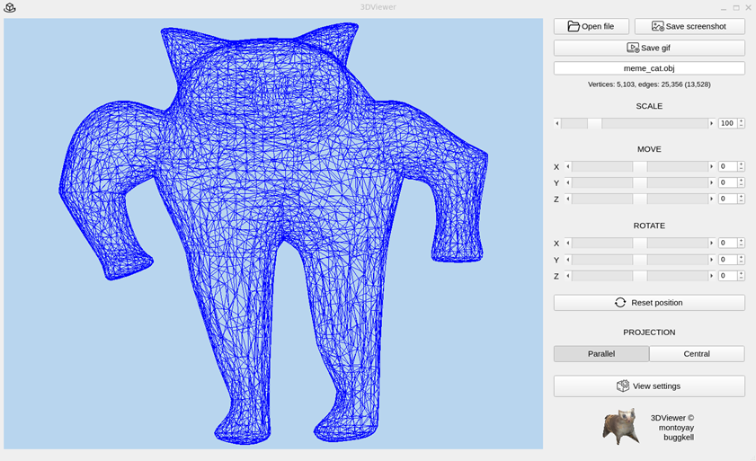

Table of Contents
- Project Description
- Features
- Technical Requirements
- Installation
- Other functions
- Authors
Project Description
3DViewer v2.0 is an application for visualizing 3D wireframe models, developed in C++ following object-oriented programming principles. This project is an improved version of the previous application (3DViewer v1.0) and includes new features, support for large datasets, and flexible interface settings.
Features
- Load 3D models in
.obj format (vertices and face lists only).
- Perform the following affine transformations on the model:
- Translate along the X, Y, Z axes.
- Rotate around the X, Y, Z axes.
- Scale the model.
- Graphical User Interface (GUI) that includes:
- A button to select the model file and a field to display its name.
- A visualization area for the wireframe model.
- Control elements for translating, rotating, and scaling the model.
- Information about the uploaded model (file name, number of vertices and faces).
- Support for models with vertex counts ranging from to 1,000,000 and more without noticeable delays (interface freeze does not exceed 0.5 seconds).
- Implementation based on the MVC architectural pattern.
- Use of three different design patterns (Facade, Builder, Singleton).
Additional Features
Settings
- Choose the type of projection (parallel or central).
- Configure the type (solid, dashed), color, and thickness of edges, as well as the shape, color, and size of vertices.
- Change the background color.
- Save user settings between program runs.
Recording
- Save rendered model images in
.bmp and .jpeg formats.
- Record model transformation animations as GIF files (10 FPS, 5 seconds).
Technical Requirements
- Language standard: C++17.
- Build with
Makefile containing standard targets (all, install, uninstall, clean, tests, etc.).
- Code follows Google Style guidelines.
- Supported GUI librarie - Qt.
Installation
- Clone the repository:
git clone <repository-link>
cd <repository-link>
- Install:
- Run:
- Uninstall:
Other functions
Also there's some other functions which You can use. You should be in the src folder.
- Testing:
- Valgrind testing:
- Make archive with program:
- Make documentation with html and pdf versions (making new folder - documentation):
- Make gcov report with coverage report (making new folder - report):
- Make UML-diagram:
Authors
School 21 students:
2025